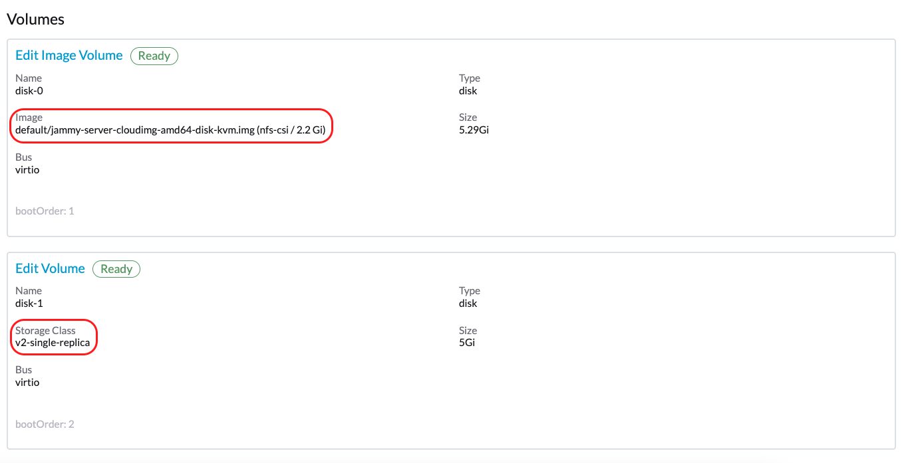

Prise en charge du stockage tiers
SUSE Virtualization prend en charge l’approvisionnement de volumes racine et de volumes de données en utilisant des pilotes externes Interface de stockage de conteneurs (CSI). Cette amélioration vous permet de sélectionner des pilotes qui répondent à des exigences spécifiques, telles que l’optimisation des performances ou l’intégration transparente avec des solutions de stockage internes existantes.
L’équipe SUSE Virtualization a validé les pilotes CSI suivants :
-
Moteur de données Longhorn V2 :
driver.longhorn.io -
LVM :
lvm.driver.harvesterhci.io -
NFS :
nfs.csi.k8s.io -
Rook (Périphérique de bloc RADOS) :
rook-ceph.rbd.csi.ceph.com
Ces pilotes CSI validés ont les capacités suivantes :
| Solution de stockage | Image de VM | Disque racine de VM | Disque de données de VM | Exportation de volume vers image de VM | Générateur de modèles de VM | Migration à chaud de VM | Instantané de VM | Sauvegarde de VM |
|---|---|---|---|---|---|---|---|---|
Moteur de données Longhorn V2 |
✔ |
✔ |
✔ |
✔ |
✔ |
✔ |
✔ |
✔ |
LVM |
✔ |
✔ |
✔ |
✔ |
✔ |
✖ |
✔ |
✖ |
NFS |
✔ |
✔ |
✔ |
✔ |
✔ |
✔ |
✖ |
✖ |
Rook (Périphérique de bloc RADOS) |
✔ |
✔ |
✔ |
✔ |
✔ |
✔ |
✔ |
✖ |
|
Le support du stockage tiers équivaut à l’approvisionnement des volumes racine et de données en utilisant des pilotes d’Interface de stockage de conteneurs (CSI) externes. Cela signifie que les fournisseurs de stockage peuvent valider leurs appareils de stockage avec SUSE Virtualization pour garantir une plus grande interopérabilité. Vous pouvez trouver des informations sur les solutions de stockage de niveau entreprise qui sont certifiées compatibles avec SUSE Virtualization dans la documentation SUSE Rancher Prime, accessible via le SUSE Customer Center. |
Conditions préalables
Pour permettre à SUSE Virtualization de bien fonctionner, utilisez des pilotes CSI qui prennent en charge les capacités suivantes :
-
Expansion de volume (redimensionnement en ligne)
-
Création d’instantanés (instantanés de volume et de machine virtuelle)
-
Clonage (clones de volume et de machine virtuelle)
-
Utilisation de volumes lecture-écriture multiples (RWX) pour Migration à chaud
Créer un cluster SUSE Virtualization
Le système d’exploitation de SUSE Virtualization suit un design immuable, ce qui signifie que la plupart des fichiers du système d’exploitation reviennent à leur état préconfiguré après un redémarrage. Par conséquent, vous devrez peut-être effectuer des configurations supplémentaires avant d’installer le cluster SUSE Virtualization pour les pilotes CSI tiers.
Certains pilotes CSI nécessitent des chemins persistants supplémentaires sur l’hôte. Vous pouvez ajouter ces chemins à os.persistent_state_paths.
Certains pilotes CSI nécessitent des paquets logiciels supplémentaires sur l’hôte. Vous pouvez installer ces paquets avec os.after_install_chroot_commands.
|
La mise à niveau de SUSE Virtualization entraîne la perte des modifications apportées au système d’exploitation dans la phase |
Installer le pilote CSI
Après l’installation du cluster SUSE Virtualization est terminée, référez-vous à Comment puis-je accéder au fichier kubeconfig ? pour obtenir le kubeconfig du cluster.
Avec le kubeconfig du cluster SUSE Virtualization, vous pouvez installer les pilotes CSI tiers dans le cluster en suivant les instructions d’installation de chaque pilote CSI. Vous devez également vous référer à la documentation du pilote CSI pour créer le StorageClass et le VolumeSnapshotClass dans le cluster SUSE Virtualization.
Configurez le cluster SUSE Virtualization
Avant de pouvoir utiliser les fonctionnalités de SUSE Virtualization Sauvegarde & Instantané, vous devez configurer certaines options essentielles via le paramètre SUSE Virtualization csi-driver-config. Suivez ces étapes pour effectuer ces configurations :
-
Connectez-vous à l’interface utilisateur SUSE Virtualization, puis accédez à Paramètres avancés →.
-
Trouvez et sélectionnez csi-driver-config, puis sélectionnez ⋮ Modifier le paramètre → pour accéder aux options de configuration.
-
Définissez le Provisionneur sur le pilote CSI tiers dans les paramètres.
-
Ensuite, configurez le Nom de la classe d’instantané de volume. Ce paramètre pointe vers le nom du
VolumeSnapshotClassutilisé pour créer des instantanés de volume ou des instantanés de VM.

|
La sauvegarde fonctionne actuellement uniquement avec les éléments suivants :
Si vous utilisez d’autres fournisseurs de stockage, vous pouvez ignorer la configuration du Nom de la classe d’instantané de volume de sauvegarde. Pour plus d’informations, consultez Compatibilité de la sauvegarde de machine virtuelle. Si le provisionneur de StorageClass n’est pas dans la liste des provisionneurs avec accès par défaut et modes de volume du CDI, vous devez annoter le StorageClass avec |
Utilisez le pilote CSI
Une fois que le pilote CSI est installé et que le SUSE Virtualization cluster est configuré, une solution de stockage externe peut être utilisée dans les tâches impliquant la gestion du stockage.
Création d’image de machine virtuelle
Vous pouvez utiliser une solution de stockage externe pour stocker et gérer des images de machines virtuelles.
Lorsque vous téléversez une image de machine virtuelle en utilisant l’interface SUSE Virtualization (Image → Créer), vous devez sélectionner la StorageClass pour la solution de stockage externe dans l’onglet Stockage. Dans l’exemple suivant, la StorageClass est nfs-csi.

SUSE Virtualization stocke l’image créée dans la solution de stockage externe.

Création de machine virtuelle
Vos machines virtuelles peuvent utiliser des volumes racine et de données dans le stockage externe.
Lorsque vous créez une machine virtuelle en utilisant l’interface SUSE Virtualization (Machine Virtuelle → Créer), vous devez effectuer les actions suivantes dans l’onglet Volumes :
-
Sélectionnez une image de machine virtuelle stockée dans la solution de stockage externe, puis configurez les paramètres requis.
-
Ajoutez un volume de données.

Dans l’exemple suivant, le volume racine est créé en utilisant NFS, et le volume de données est créé en utilisant le moteur de données Longhorn V2.

Création de volumes
Vous pouvez créer des volumes dans votre solution de stockage externe.
Lorsque vous créez un volume en utilisant l’interface SUSE Virtualization (Volumes → Créer), vous devez effectuer les actions suivantes :
-
Classe de stockage : Sélectionnez la StorageClass cible (par exemple, nfs-csi).
-
Mode de volume : Sélectionnez le mode de volume correspondant (par exemple, Filesystem).

Paramètres avancés
Profils de stockage
Vous pouvez désormais utiliser l’API CDI pour créer des profils de stockage personnalisés qui simplifient la définition des volumes de données. Les profils de stockage permettent à plusieurs volumes de données de partager les mêmes paramètres de provisionnement.
Voici un exemple de profil de stockage LVM :
apiVersion: cdi.kubevirt.io/v1beta1
kind: StorageProfile
metadata:
name: lvm-node-1-striped
spec:
claimPropertySets:
- accessModes:
- ReadWriteOnce
volumeMode: Block
status:
claimPropertySets:
- accessModes:
- ReadWriteOnce
volumeMode: Block
cloneStrategy: snapshot
dataImportCronSourceFormat: pvc
provisioner: lvm.driver.harvesterhci.io
snapshotClass: lvm-snapshot
storageClass: lvm-node-1-stripedVous pouvez définir les champs pour remplacer la configuration par défaut. Pour plus d’informations, consultez Profils de Stockage dans la documentation CDI.
|
Évitez de modifier directement le profil de stockage ou le CDI. Au lieu de cela, laissez le SUSE Virtualization contrôleur synchroniser et persister la configuration du profil de stockage grâce à l’utilisation des annotations CDI. |
limites
-
Le support de sauvegarde est actuellement limité aux volumes SUSE Storage. SUSE Virtualization ne peut pas créer de sauvegardes de volumes dans un stockage externe.
-
Il existe une limitation dans le CDI qui empêche SUSE Virtualization de convertir les PVC attachés en images de machine virtuelle. Avant d’exporter un volume dans un stockage externe, assurez-vous que le PVC n’est pas attaché à des charges de travail. Cela empêche l’image résultante de rester bloquée dans l’état Exportation.

Déploiement du pilote NFS CSI
|
Vous pouvez déployer le pilote NFS CSI uniquement lorsque le serveur NFS est déjà installé et en cours d’exécution.
Si le serveur est déjà en cours d’exécution, vérifiez l’option |
-
Installez le pilote en utilisant le chart Helm
csi-driver-nfs.$ helm repo add csi-driver-nfs https://raw.githubusercontent.com/kubernetes-csi/csi-driver-nfs/master/charts $ helm install csi-driver-nfs csi-driver-nfs/csi-driver-nfs --namespace kube-system --version v4.10.0 -
Créez la StorageClass pour NFS.
Pour plus d’informations sur les paramètres, consultez Paramètres du Pilote : Utilisation de la Classe de Stockage dans la documentation du Pilote NFS CSI de Kubernetes.
apiVersion: storage.k8s.io/v1 kind: StorageClass metadata: name: nfs-csi provisioner: nfs.csi.k8s.io parameters: server: <your-nfs-server-ip> share: <your-nfs-share> # csi.storage.k8s.io/provisioner-secret is only needed for providing mountOptions in DeleteVolume # csi.storage.k8s.io/provisioner-secret-name: "mount-options" # csi.storage.k8s.io/provisioner-secret-namespace: "default" reclaimPolicy: Delete volumeBindingMode: Immediate allowVolumeExpansion: true mountOptions: - nfsvers=4.2Une fois créée, vous pouvez utiliser la StorageClass pour créer des images de machine virtuelle, des volumes racine et des volumes de données.
Problèmes connus
1. Boucle de téléchargement d’image infinie
Le processus de téléchargement d’image boucle indéfiniment lorsque la StorageClass pour l’image utilise le pilote LVM CSI. Ce problème est lié au volume temporaire, qui est créé par CDI et est utilisé pour stocker temporairement les données de l’image. Lorsque le problème existe dans votre environnement, vous pourriez trouver les messages d’erreur suivants dans les journaux du pod importer-prime-xxx :
E0418 01:59:51.843459 1 util.go:98] Unable to write file from dataReader: write /scratch/tmpimage: no space left on device
E0418 01:59:51.861235 1 data-processor.go:243] write /scratch/tmpimage: no space left on device
unable to write to file
kubevirt.io/containerized-data-importer/pkg/importer.streamDataToFile
/home/abuild/rpmbuild/BUILD/go/src/kubevirt.io/containerized-data-importer/pkg/importer/util.go:101
kubevirt.io/containerized-data-importer/pkg/importer.(*HTTPDataSource).Transfer
/home/abuild/rpmbuild/BUILD/go/src/kubevirt.io/containerized-data-importer/pkg/importer/http-datasource.go:162
kubevirt.io/containerized-data-importer/pkg/importer.(*DataProcessor).initDefaultPhases.func2
/home/abuild/rpmbuild/BUILD/go/src/kubevirt.io/containerized-data-importer/pkg/importer/data-processor.go:173
kubevirt.io/containerized-data-importer/pkg/importer.(*DataProcessor).ProcessDataWithPause
/home/abuild/rpmbuild/BUILD/go/src/kubevirt.io/containerized-data-importer/pkg/importer/data-processor.go:240
kubevirt.io/containerized-data-importer/pkg/importer.(*DataProcessor).ProcessData
/home/abuild/rpmbuild/BUILD/go/src/kubevirt.io/containerized-data-importer/pkg/importer/data-processor.go:149
main.handleImport
/home/abuild/rpmbuild/BUILD/go/src/kubevirt.io/containerized-data-importer/cmd/cdi-importer/importer.go:188
main.main
/home/abuild/rpmbuild/BUILD/go/src/kubevirt.io/containerized-data-importer/cmd/cdi-importer/importer.go:148
runtime.mainLe message no space left on device indique que le système de fichiers créé à l’aide du volume temporaire n’est pas suffisant pour stocker les données de l’image. CDI crée le volume temporaire en fonction de la taille du volume cible, mais un certain espace est perdu à cause de la surcharge du système de fichiers. La valeur de surcharge par défaut est de 0.055 (équivalent à 5,5 %), ce qui est suffisant dans la plupart des cas. Cependant, si la taille de l’image est inférieure à 1 Go et que sa taille virtuelle est très proche de la taille de l’image, la surcharge par défaut est susceptible d’être insuffisante.
La solution de contournement consiste à augmenter la surcharge du système de fichiers à 20 % en utilisant la commande suivante :
# kubectl patch cdi cdi --type=merge -p '{"spec":{"config":{"filesystemOverhead":{"global":"0.2"}}}}'L’image devrait être téléchargée une fois que la surcharge du système de fichiers est augmentée.
|
Augmenter la valeur de surcharge n’affecte pas la taille du PVC de l’image. Le volume temporaire est supprimé après l’importation de l’image. |
Problème connexe : #7993 (Voir ce commentaire.)
2. Prise en charge du multipath
Le multipathd service est désactivé dans SUSE Virtualization par défaut. Cependant, certains CSI tiers peuvent nécessiter que vous activiez le service.
Après avoir installé SUSE Virtualization, vous pouvez activer et démarrer multipathd en vous connectant à chaque nœud de cluster et en exécutant les commandes suivantes :
systemctl enable multipathd
systemctl start multipathdAlternativement, vous pouvez créer un SUSE® Rancher Prime: OS Manager fichier CloudInit dans le répertoire /oem sur chaque hôte (par exemple, /oem/99-start-multipathd.yaml) avec le contenu suivant :
stages:
default:
- name: "start multipathd"
systemctl:
enable:
- multipathd
start:
- multipathdCe processus peut être automatisé sur l’ensemble du Harvester cluster en utilisant un CloudInit CRD.
apiVersion: node.harvesterhci.io/v1beta1
kind: CloudInit
metadata:
name: start-mutlitpathd
spec:
matchSelector:
harvesterhci.io/managed: "true"
filename: 99-start-mutlitpathd
contents: |
stages:
default:
- name: "start multipathd"
systemctl:
enable:
- multipathd
start:
- multipathd
paused: false